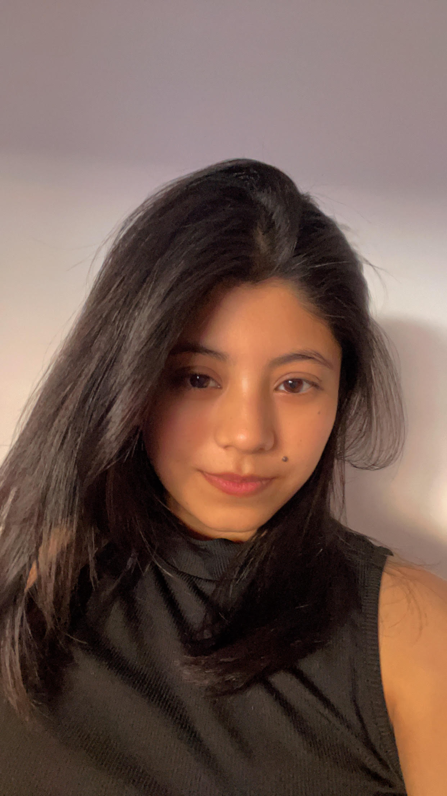

Summary
I am a dedicated and compassionate IT student eager to apply my skills and knowledge to real-world
challenges. With a strong foundation in Java, Python, Javascript, HTML, CSS and c-sharp. I am passionate
about web development, IT support role and software development. I have a good communication skill.
Education:
- Pascal Academy:I have completed my class from this school. I got 3.75 GPA and topped
from my school.
- SOS Hermann Geminer Secondary School:I have completed my +2 degree with 3.43 GPA from
science faculty.
- Kings Own InstituteI am doing Bachelor of Information Technology.
Experiences:
- Team Leader:I have worked as a team leader in one of the web development projects. We have worked to create
website called Himalyan eats where user can login or register, browse through menu page, reserve table and many more.
- Peer Mentor: I have worked as peer mentor in my college KOI. where I have assisted many students with their problem
in moodles, or downloading software, accessing various services in college and more.
Skills:
- I have knowlege on creating website using various languages.
- Java, Python and Javascript
- MySQL
- Github
- Node.js and react.js
Photo

References
Available upon Request.